Merge & split
Drag two files in, click merge, get one file out. Or split a 400-page report into per-chapter PDFs.
Enterprise-grade. Local-first. Free.
Read, edit, OCR, redact, flatten, sign, diff, and run local AI on your documents — on macOS, Windows, and Linux. Zero cloud. Zero telemetry. Zero subscription.
macOS 13+ (Apple Silicon & Intel) · Windows 10+ · Linux (.deb, AppImage) · Docker (GHCR)
36 tools. Local-first. Zero cloud round-trip. Merge, split, compress, convert, OCR, redact, sign, flatten, archive, tag for accessibility, prep for press — all in one cross-platform app, free forever.
Combine PDFs in the order you want — drag, drop, done.
Pull one page, a range, or break a 400-page report into chapters.
Rotate pages 90/180/270° individually or batch.
Reorder, delete, insert. Drag-and-drop page thumbnails.
Roman front matter, Arabic body, custom prefixes, restart per section.
Generate bookmarks from headings, hand-edit the tree.
2, 4, 6, or 9 pages per sheet. Handouts, contact sheets, review prints.
Real image downsampling + stream re-encoding. 80 MB → 12 MB.
Turn scanned receipts, contracts, archives into searchable, selectable text.
Title, author, subject, keywords, dates — bulk-rewrite across folders.
Recover content from corrupt PDFs. Rebuild xref tables, salvage objects.
DOC/DOCX export — preserves headings, lists, tables, inline images.
Auto-detect tables, stitch multi-page tables, export XLSX/CSV.
Each page → JPG/PNG, or extract every embedded image. Set DPI.
Batch images into one PDF — set orientation, margins, page size.
Typeset Markdown with code blocks, tables, headings. No LaTeX needed.
Render a URL or local HTML to PDF with print-CSS support.
Double-click text to edit. Fonts and layout preserved — no rasterization.
Highlight, sticky-note, freehand draw. Export every annotation as JSON.
Trim margins with corner handles or millimeter input. Per page or whole doc.
Diagonal text or image watermark, opacity control, per-page or whole doc.
DRAFT, APPROVED, CONFIDENTIAL — or your own image stamp. Vector-perfect.
Page numbers, dates, file paths, branding, classification labels.
Auto-detect form fields, fill or build interactive PDFs — text, checkbox, choice.
Litigation-grade sequential IDs across a whole production set.
Visual + semantic diff side-by-side. Coral/mint pixel overlay, n/N to navigate.
Physically excises text, images, metadata. Passes Adobe's redaction verifier.
AES-256 password protection. Owner + user passwords, per-action perms.
Remove password security on PDFs you own. Strip restrictions.
Drop a signature anywhere. Flatten to 150 DPI — locked, uneditable.
ISO-standardized archival. Embed fonts, output intent, XMP — 50-year safe.
Generate StructTree (H1–H6, P, lists, figures) + Beacon alt-text. Section 508 ready.
FOGRA51/GRACoL2013 ICC profiles, OutputIntent, trapping key — press-ready.
Ask your PDF anything. Runs locally via llama.cpp — no API key, no upload.
One-shot exec summary, totals, key clauses, citations — without leaking the doc.
Detect names, SSNs, phones, emails. Bake bars in permanently — content gone.
Everything iLovePDF does — plus PDF/UA-1 accessibility, PDF/X-4 prepress, Bates numbering for legal discovery, and a local AI that never uploads your file. Download free · See the v3 Enterprise Suite ↓

Drag two files in, click merge, get one file out. Or split a 400-page report into per-chapter PDFs.
Double-click any text block to edit. Fonts and layout stay intact — no rasterization, no fuzzy output.
Drop a signature anywhere. Then flatten to 150 DPI for legal and compliance — fully uneditable, locked.
Compare two PDF revisions side-by-side. Coral/mint pixel-change overlay, scroll-locked panes, n/N to jump between changes. Acrobat charges $239/yr for this. Slab gives it away.
Turn scanned receipts, contracts, and archives into searchable, selectable text. Batch a whole folder in one shot.
Detect names, SSNs, phones, emails, and addresses — then bake the black bars in permanently. The text underneath is gone, not hidden.
Compare two PDFs side-by-side. Added, removed, and changed text is color-coded — even across reflowed layouts.
Highlight, sticky-note, and freehand draw — then export every annotation as JSON for review pipelines.
Trim margins precisely with corner handles or millimeter input. Apply to one page, a range, or the whole document.
Password-protect any PDF with AES-256. Set owner and user passwords plus per-action permissions (print, copy, edit).
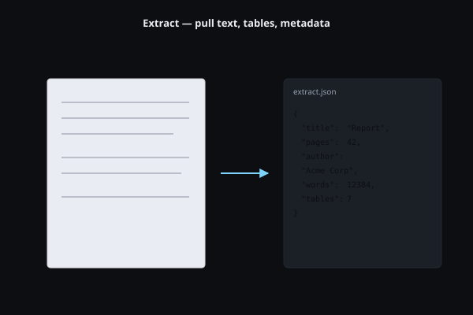
Pull plain text, structured JSON, or per-page output. Metadata, fonts, and word counts in one pass.
Stamp page numbers, dates, file paths, branding, and classification labels across every page in seconds.
Render Markdown into beautiful typeset PDFs with code blocks, tables, and headings — no LaTeX needed.
Edit title, author, subject, keywords, and dates. Bulk-rewrite metadata across folders for compliance.
Fit 2, 4, 6, or 9 pages per sheet for handouts, contact sheets, and review prints — with crop marks if you need them.
Generate bookmarks from headings or hand-edit the tree. Readers get clickable navigation, not a wall of pages.
Roman for front matter, Arabic for the body, custom prefixes per chapter. Start at any page, restart on sections.
Split by page count, byte size, regex-matched headings, or bookmark levels. One command, dozens of clean output files.
DRAFT, APPROVED, CONFIDENTIAL, or your own image stamp — vector-perfect, applied to selected pages.
Diagonal text or image watermarks with opacity control. Apply per-page or to the whole document in one shot.
Detect and lift tables into CSV or Excel — multi-page tables stitched together, headers preserved.
Check PDF/A compliance, accessibility tags, embedded fonts, and security risks. Compliance reports your auditor will accept.
Ask your PDF anything. Summaries, totals, key clauses, citations. Runs on your machine via llama.cpp — no API key, no upload, no cap.
Down-sample images, re-encode streams, and strip duplicate fonts. 40 MB scans become 3 MB attachments — without the fuzzy artifacts.
ISO 19005-2 conformance in one click. Sanitize, embed the output intent, inject XMP, set the conformance flag — passes 54 of 54 veraPDF checks.
Acrobat's Preflight panel, free. Color-coded errors, warnings, info — copy as Markdown for IT-ticket-ready audit reports. ⌘⇧I.
Stamp a 10,000-page production set with a monotonic counter chained across files. Emits Relativity / Concordance / Everlaw load files. ⌘⇧B.
Real image downsampling + stream re-encoding. 80 MB scans become 12 MB email attachments. Web · Print · Archive profiles, deterministic, 100% local.
PDF/UA-1 structure tree generated locally — headings, paragraphs, lists, figures, reading order. Beacon writes alt-text with a SHA-256 disk cache. ⌘⇧T.
FOGRA51 + GRACoL2013 ICC profiles bundled. Embed the OutputIntent, set the trapping key, validate conformance — no rejection at prepress. ⌘⇧X.
Nine releases. One promise: every paid Acrobat Pro workflow — archival, accessibility, redaction, discovery, compression, and print production — done locally, for free. No subscription. No cloud round-trip. No file ever leaves your machine.
One click turns any PDF into an ISO 19005-2 compliant archival document. Sanitizes interactive content, injects XMP metadata, embeds the output intent, and writes the conformance flag. The same converter Adobe Acrobat Pro DC charges $239/yr for — free, offline, cross-platform.
pdfaid:part=2 + conformance=BAcrobat Pro DC's Preflight panel, for free. Loupe surfaces every conformance gap, font issue, color-space anomaly, and metadata violation in a sortable inspector — then exports a Markdown audit report you can hand to your compliance officer.
The dirty secret of PDF/A: most PDFs reference Helvetica, Times, and Courier without embedding them — instantly disqualifying the document. Foundry vendors the DejaVu 2.37 family and auto-substitutes on conversion. The wedge that closes Acrobat's last font-embed advantage.
allow_unembedded_fonts)The Adobe Acrobat Pro discovery workflow, free and offline. Stamp a 10,000-page production set with a monotonic Bates counter, emit a Relativity / Concordance / Everlaw-compatible load file, and apply CONFIDENTIAL / ATTORNEYS' EYES ONLY / PRIVILEGED stamps — without your privileged documents ever touching a third-party server.
Black rectangles drawn on top of a PDF are a malpractice lawsuit waiting to happen. Veil physically excises the underlying text, images, metadata, and hidden layers — the same standard Adobe charges $239/yr for, audit-clean against Acrobat's own redaction verifier.
Drop an 80 MB scan in, get a clean 12 MB file back. Real image downsampling to a target DPI, JPEG re-encoding at a configurable quality, and a metadata strip that nukes the cruft scanners leave behind — the "Reduce File Size" feature Acrobat charges $239/yr for, on-device and deterministic.
Section 508 / EN 301 549 / WCAG 2.1 / ADA Title III — if you publish PDFs to the public sector, healthcare, or education, you need PDF/UA-1. CommonLook and PAC are paid Windows-only tools that ship your files to a server. Loom tags, alt-texts, and validates locally, free.
One-click PDF/X-4 for prepress. Embed FOGRA51 or GRACoL2013 ICC profiles, normalize color, write the OutputIntent, set the trapping key, and re-emit a press-ready file — the $239/yr Acrobat Pro feature (and Enfocus PitStop's $719/seat starting price) reduced to a single keystroke.
All nine v3 releases ship today in Slab v3.8.0 — 1,318 tests passing, Clippy-clean, six platform bundles (macOS arm64/x64, Linux deb/AppImage, Windows msi/nsis), and a Docker image on GHCR. Zero telemetry, zero cloud calls, AGPL forever.
No. Every feature — OCR, redaction, PDF/A conversion, Beacon AI — runs locally on your CPU/GPU. The app has zero telemetry, zero analytics, zero "phone home." You can verify by reading the source.
There isn't one. Slab is open source under the AGPL. We may eventually offer a paid Pro tier for team features (shared signing keys, hosted plugin registry) but the entire desktop product, including AI and compliance tools, stays free forever.
Yes. Download the installer for your platform from Releases, double-click to install. No package manager, no Homebrew, no system Python. Linux ships as AppImage and .deb.
For document Q&A, summaries, and extraction — surprisingly close. Beacon runs Llama 3.1 or Mistral locally via Ollama. You give up the absolute frontier (GPT-5) for total privacy and zero API cost. For client agreements and HR records, that's the right trade.
That's the design goal. AGPL source, reproducible builds, signed releases, no telemetry, no cloud calls. We're packaging an enterprise security review template — drop us an issue if you need one early.
The Foundry plugin SDK ships in v2.0. Write TypeScript, sign with your team's key, ship to colleagues. No marketplace lock-in, no enterprise licensing department to call.
Every operation runs locally. Your client agreements, redacted depositions, and HR records never touch a third-party server.
One UX on macOS, Windows, and Linux. IT deploys the same product to legal, finance, and engineering — no exceptions.
Redact PII, flatten annotations into a permanent record, batch-OCR scanned archives. The legal-grade workflow without the legal-grade price tag.
Extend Slab with the Foundry SDK (typed TypeScript). Build internal tools, sign them, ship them to your team — no enterprise licensing department required.
| Slab | Adobe Acrobat Pro | PDF Expert | Foxit | |
|---|---|---|---|---|
| Price | Free | $239 / year | $79 / year | $129 / year |
| macOS · Windows · Linux | ✓ · ✓ · ✓ | ✓ · ✓ · ✗ | ✓ · ✗ · ✗ | ✓ · ✓ · ✗ |
| Files stay local | ✓ Always | ✗ Cloud features upload | ~ Partial | ~ Partial |
| Local AI (offline) | ✓ Beacon | ✗ Cloud only | ✗ | ~ Cloud add-on |
| Plugin SDK | ✓ Foundry | Enterprise licensing | ✗ | ✗ |
| Telemetry | None | Yes | Yes | Yes |